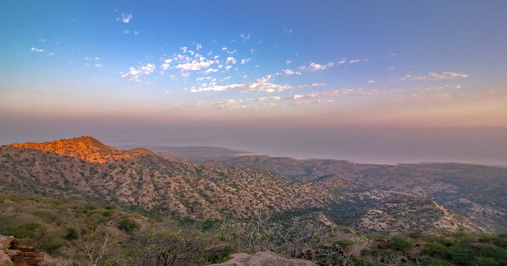
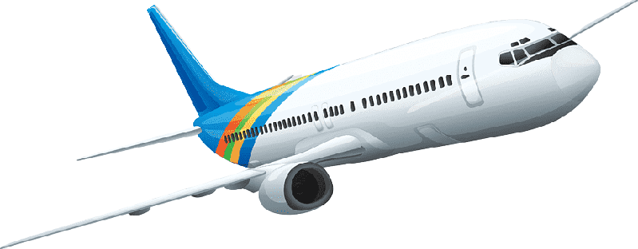

North of the village of Khavda, Kalo Dungar (Black Hill) marks Kutch's highest point (462 m), with remarkable views of the Great Rann salt flat (or inland sea if you’re visiting during the monsoon). You’ll need your own transport to visit. The hill is also famous for a 400-year old temple dedicated to Lord Dattatreya. You walk to the edge of the hill and look over at the sprawling blanched landscape that changes hues as the day progresses and the sun sinks behind the mountains. A 15-min drive from the base of the hill lands you on the India bridge that connects the far north of Kutch to the mainland. The area comes under the jurisdiction of the army and photography is not allowed. The Indo-Pak border lies about 40 km north from here.
Brief History
Legends say that Lord Dattatreya stopped to rest here and found a group of starving jackals. He offered them his body to eat and as they ate, his body continually regenerated itself. For the last four centuries, the priests at the temple prepare cooked rice for jackals who come in the late evenings for a meal.

How to Get There?
By Road
State and private buses service the city from all major parts of Gujarat.
By Train
The railway station lies on the western railways network.

By Air
Kalo Dungar lies 90 km north of Bhuj. Bhuj is well connected by air, rail and road. The Bhuj airport lies 4 km from the city and has ample domestic flights from major destinations in India.